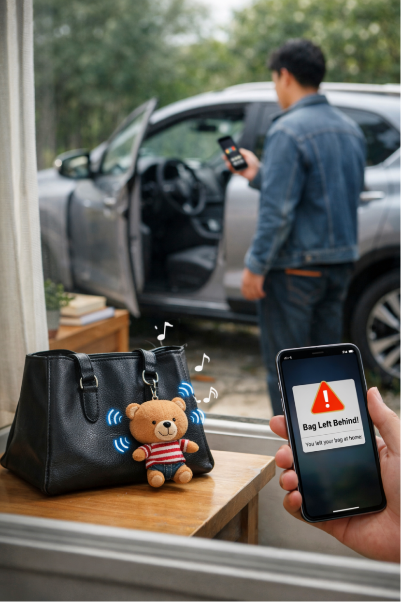

01. 手提包 / 钥匙遗忘提醒（简版）
场景
玩偶挂在手提包或水瓶袋上，机芯挂在钥匙上；当人离开、包或钥匙被留在原地，手机立刻提醒“你可能忘了某样东西”，同时留在原地的玩偶或挂件发声或振动。
原理
系统不追踪位置，只在“人和重要物品发生异常分离”这一刻触发事件，进行一次性、双向提醒。
创新区别
不是事后找丢失物品，而是在刚刚要忘记时提前发现；提醒同时作用于人和物，低功耗、无需持续连接。
18 个低功耗、事件驱动的真实应用：只在关键时刻确认事实。
玩偶挂在手提包或水瓶袋上，机芯挂在钥匙上；当人离开、包或钥匙被留在原地，手机立刻提醒“你可能忘了某样东西”，同时留在原地的玩偶或挂件发声或振动。
系统不追踪位置，只在“人和重要物品发生异常分离”这一刻触发事件，进行一次性、双向提醒。
不是事后找丢失物品，而是在刚刚要忘记时提前发现；提醒同时作用于人和物，低功耗、无需持续连接。
机芯嵌入塑料行李标签用于托运行李；当同一航班、同一城市的其他行李继续流转而某件行李未同步前进时，机场系统提示该行李已掉队。
系统不是持续追踪行李位置，而是基于“同行行李的相对一致性”判断异常，一旦出现不一致即触发“掉队事件”。
不是等旅客发现行李没到再查找，而是在行李流程中主动识别掉队；旅客需要时可确认行李状态与当前位置，但系统默认只关注事件本身。
孩子随身携带玩偶；与妈妈在商场等公共空间走散时，妈妈手机立即收到提醒，孩子身上的玩偶同时发声或振动，提示孩子停留或注意周围。
系统先识别亲子分离事件并即时提醒，随后在需要时启用定位确认孩子位置，并识别附近同样佩戴该类玩偶的成年人作为潜在协助者。
不是只定位、也不是等孩子迷路后求助，而是“分离即提醒 + 必要时定位 + 就近人群协助”的连续事件处理，将走散风险在最早阶段化解。
老人随身携带玩偶，日常走路、买菜、散步时系统不介入；当老人走出日常活动范围或主动按下玩偶求助时，事件被记录，家人及照护群同时收到确认语音。
系统以日常行为为基线，仅在出现“异常偏离”或“主动触发”时介入；若老人未完成确认，事件持续存在并自动升级。
不是持续监控老人，也不是一次性报警，而是“平时不打扰 + 需要时一键求助 + 未确认自动升级”，并可联动附近佩戴同类玩偶的人提供就近协助。
家庭出行时将玩偶放入托运行李；到达目的地后，手机自动确认该行李是否已随人一同到达。
系统基于人与行李的行程一致性判断状态，在到达节点触发一次性确认，而非全程追踪。
不是等行李没出现再人工查询，而是在到达瞬间主动给出“是否到达”的明确结论，让不确定性提前结束。
妈妈为学校或公园设置活动范围；孩子越界时妈妈手机收到提醒，孩子随身玩偶同步发声或振动提示。
系统通过电子围栏识别越界事件并即时提醒，随后支持家长发出询问，孩子仅需按下玩偶完成一次回执确认。
不是持续定位或反复通话，而是“越界即提醒 + 一键确认状态”，用最少操作完成一次明确沟通，降低紧张与干扰。
携带玩偶的人在公共空间中偶然接近，手机提示附近存在同类玩偶使用者，是否回应、结识完全由个人决定。
系统仅识别短时空间接近这一事件并发出一次提醒，不自动建立关系，也不持续追踪。
不是社交匹配或强制连接，而是“提醒存在 + 人自主选择”，让偶遇保持偶然，让关系是否发生始终由人决定。
当大量携带玩偶的人在同一地点自然聚集，系统向用户呈现“此处出现集中态势”的事实状态。
系统基于数量与密度变化识别聚集事件，只呈现结果，不推断原因、不引导行为。
不是活动组织或社交号召，而是“状态被看见 + 行动由人决定”，让用户自行通过其他渠道了解发生了什么、是否参与。
家庭、班级或有共同兴趣的人一起购买玩偶形成群体，由群主发起活动或请求，成员根据当下实际情况选择是否响应。
系统以真实成员关系与现实事件为基础，只在活动发起、状态变化或成员响应时记录与传递信息。
不是虚拟社群或强制打卡，而是“现实群体 + 事件驱动响应”，让组织建立在真实关系和真实发生的事情之上。
机芯嵌入牛、羊、马的项圈中，牧场主无需持续查看，动物自由活动、自然吃草。
系统以电子围栏为边界，仅在动物真实越界时触发事件并向牧场主手机发出提醒。
不是全天候监控或频繁定位，而是“平时不打扰 + 越界才介入”，用事件替代人工盯守，降低管理负担。
机芯嵌入车辆事件装置中，一旦发生交通事故，系统在碰撞发生的瞬间自动记录该事件。
系统基于异常冲击与状态突变识别事故，仅在事故这一刻触发记录，而非持续监控车辆行程。
不是行车全程录像或长期追踪，而是“只记录关键瞬间的事实”，为后续处理与理赔提供清晰、可核验的事件依据。
机芯作为小型挂件放置在保险箱、门或柜子中，日常状态下不发生任何提示或干预。
当检测到开启、敲击或异常撬动时，系统记录一次事实事件并向手机发送通知。
不是自动判断是否盗窃或持续监控，而是“只记录发生过什么 + 是否异常由人判断”，把决策权留给使用者。
机芯放置在门、仓库或贵重物品现场，平时长期不工作，可能一年甚至更久都没有任何变化。
系统仅在检测到移动、开启或状态改变这一刻上报一次事件并通知手机。
不是持续监控或定期检查，而是“长期沉默 + 关键时刻一次提醒”，专为低频但高重要性的场景设计。
机芯嵌入枪械本体或监管挂件中，当枪械发生取出、移动、归位等关键状态变化时，系统自动记录对应时间点。
系统基于状态变化事件建立时间线，只在关键动作发生时记录，不进行持续定位或行为判断。
不是实时追踪或自动执法，而是“关键事实被记录 + 是否违规由监管方判定”，适用于合规销售、存放与政府监管场景。
机芯嵌入脚拷等监管装置中，用于保外就医或监视居住人员管理；当发生移动或状态变化时，系统记录对应事实。
系统以状态变化事件为触发条件进行记录，平时不持续上报；管理部门在需要时可主动查询当前状态。
不是全天候追踪或实时监控，而是“关键变化被记录 + 查询按需进行”，在满足监管要求的同时降低持续干扰与能耗。
机芯可附着在任何固定或移动的物品上，用户在需要时通过手机主动发起确认，了解该物品当前是否在原位、是否移动过、是否处于既定状态。
系统不进行持续追踪，仅在被请求或状态发生变化时返回一次事实结果，提供“此刻是否符合预期”的确认。
不是实时定位或长期监控，而是“按需确认事实状态”，让任何物品在关键时刻变得可被确认，而非被持续盯住。
导游为每位团员配发一个玩偶；行程中导游可主动查询是否有人离队或发生异常，团员收到查询后按下玩偶按键，表示“正常，我马上归队”。
系统以导游发起的查询事件为触发点，团员通过一次按键完成状态回执，不进行持续定位或监控。
不是全程追踪或频繁点名，而是“需要时查询 + 一键回执确认”，在不打扰行程的前提下快速确认团队状态。
孩子或汽车随身携带玩偶，在人群密集区域或大型停车场中，家长或车主可快速确认自己的人或车辆所在位置。
系统在主动查询时返回一次当前位置或相对方向信息，不进行持续追踪。
不是长期定位或地图导航，而是“需要时快速确认”，让人在复杂环境中更快找到目标，减少无效搜索。